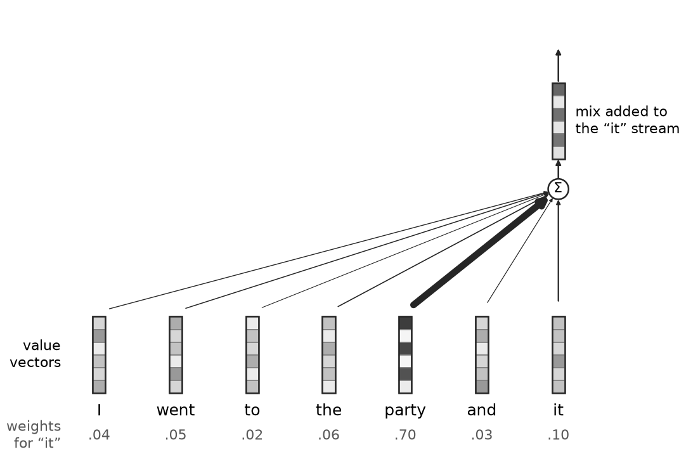
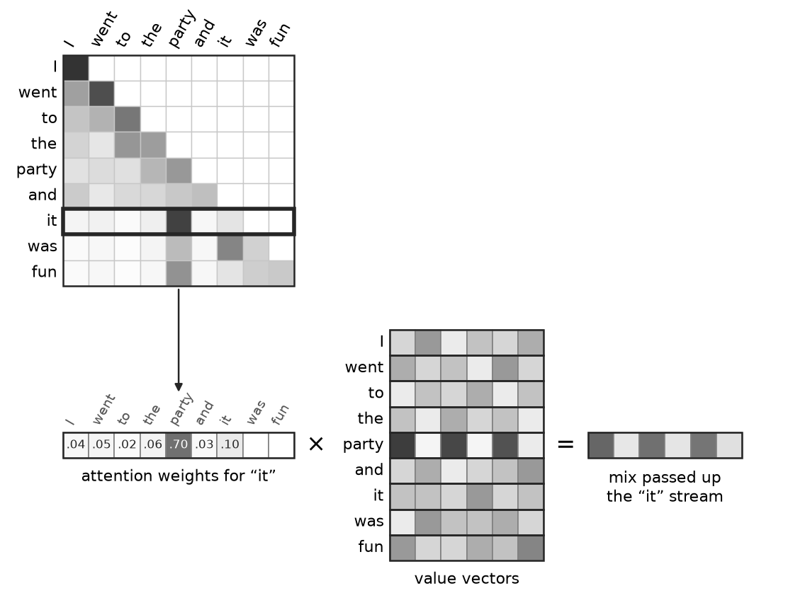
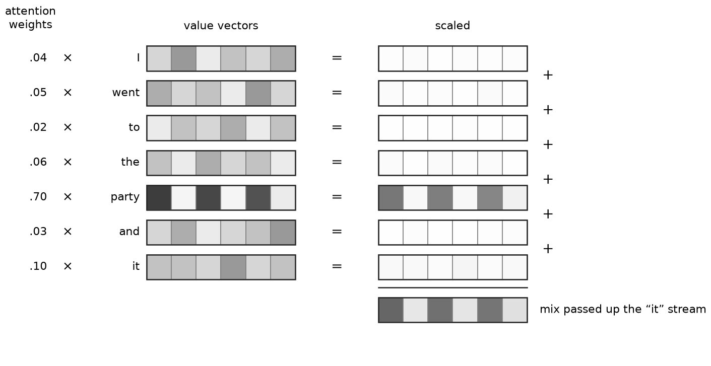
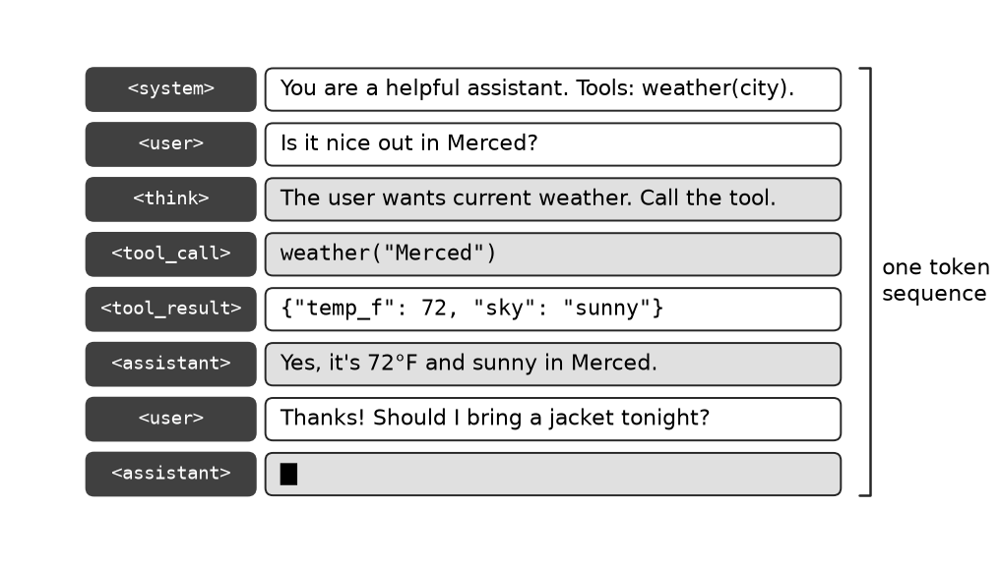
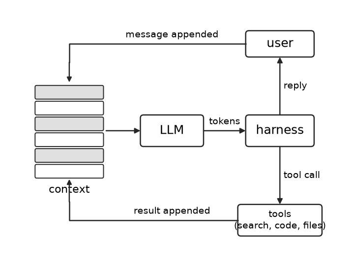
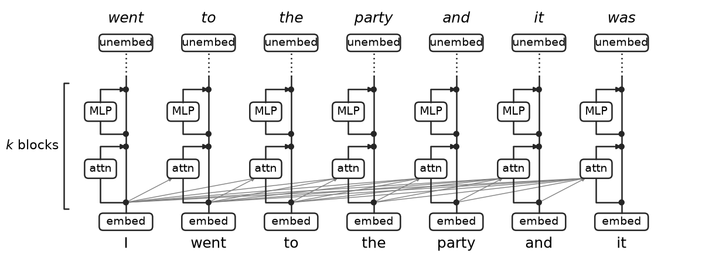
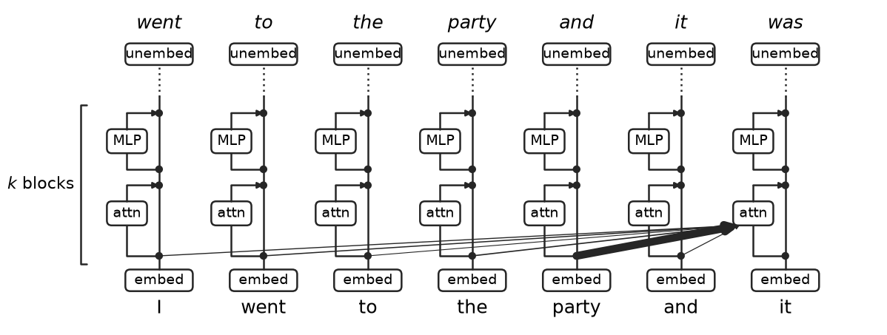
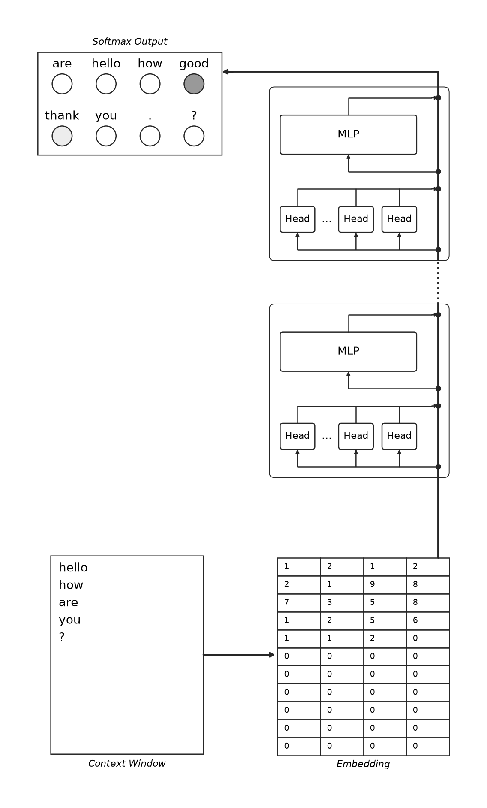
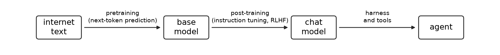

fig_attention_lanes.py
Attention mixing drawn in the one-stream-per-token layout. Each token's value vector sits in its own lane. The "it" lane takes a weighted mix of the value vectors (line width = attention weight) and adds it to its stream.

fig_attention_row.py
Attention as row processing. Top: the causal attention matrix for one head (row = the token doing the reading). Bottom: the "it" row times the stack of value vectors gives a weighted mix, dominated by the "party" value vector.

fig_attention_sum.py
Attention as a weighted sum (linear combination) of value vectors. Each earlier value vector is scaled by its attention weight for "it"; the scaled vectors are summed. Only "party" survives the scaling.

fig_context_window.py
Anatomy of a context window in a chat model with tools. Everything the model sees is one token sequence. Special tokens (dark boxes) mark who wrote each part. Gray segments were generated by the model.

fig_harness.py
A harness: the program around the model. The model only ever maps a context to more tokens. The harness reads those tokens; if they are a tool call it runs the tool and appends the result to the context, otherwise it shows the reply to the user.

fig_lanes.py
One residual stream per token (after Beckmann and Queloz 2025, fig. 4b). Each token gets its own vertical stream. Attention reads from the current stream and earlier streams; the MLP reads only from its own stream. Both write back into the stream. At the top, each stream predicts the next token. Two variants: lanes_full draws every attention read; lanes_focus draws only the reads into the "it" stream, with line width proportional to attention.


fig_overview.py
Redraw of TransformerOverview / TransformerOverview2 with a residual stream. The embedding matrix feeds a vertical residual stream. Each transformer block is a row of attention heads (with dots for the ones not shown) followed by one MLP. The heads share one read from the stream and one write back; the MLP then does the same, as in the residual-stream figures later in the chapter. The top of the stream feeds the softmax output. Only the first time step is rendered; draw(2) gives the second.

fig_pipeline.py
From internet text to agent: pretraining, post-training, harness.
